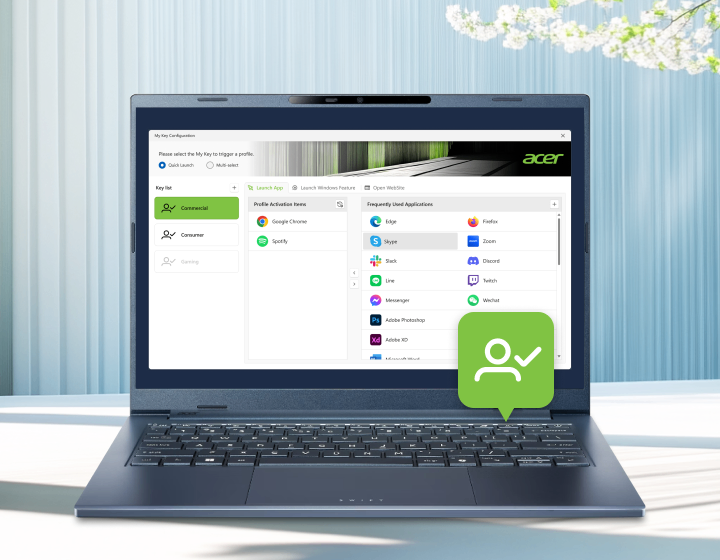

Acer My Key
What is My Key?
The Acer My Key is a customizable hotkey that lets you define actions to launch apps, open websites or Windows features with a single button press. Select “Quick Launch” for a single action, or choose “Multi-Selection” to set up three of your favorite actions.
Simply long-press the key to open the Acer My Key application and adjust your settings.


Launch App
Open a specific application.
Launch Windows Feature
Toggle specific Windows features.


Open Website
Launch a predefined URL in the default web browser.